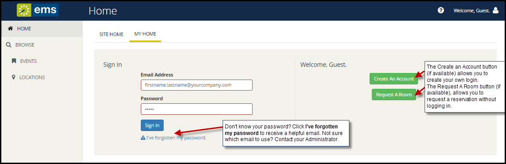

Create Your Login or Get a New Password
- From Log In screen, if your Administrator has enabled it, you can create a new Account using the Create an Account button to the right.

Tip: If enabled, you may instead Request a Room as a Guest. These requests must be approved by designated users in your organization.
- Once the Create an Account dialog appears, complete the required fields (red outlines).
- You can opt out of receiving automatic emails from such as event reminders, confirmations and summaries. These may trigger when you make reservations and or view or modify miscellaneous notes for your account.
- You will be prompted to enter an authentication code. The code is case-sensitive and must be entered exactly as it is displayed. If you cannot read it, click Show another code.
- does not impose any rules on how to compose your account’s password; however, you may have to adhere to your organization’s standards for passwords.
- Click the Save button to activate your new account or send it for approval to your Administrator, depending on your implementation.